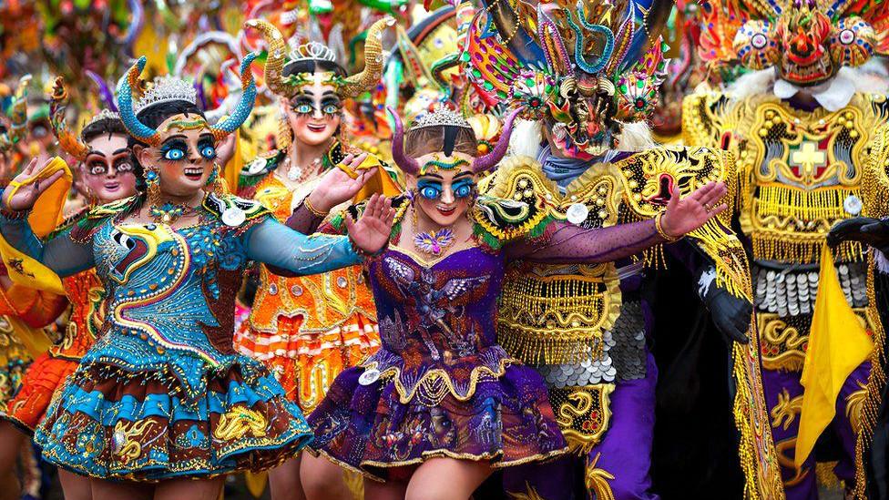

El Carnaval de Oruro es la máxima representación de los Carnavales en Bolivia “Obra Maestra del Patrimonio Oral e Intangible de la Humanidad” (Unesco) A lo largo del carnaval participan más de 48 conjuntos folklóricos que son distribuidos en 18 especialidades de danzas que reúnen de distintas partes de Bolivia y que realizan su peregrinación hacia el Santuario del Socavón cada sábado de carnaval en la tradicional “Entrada”.
Esta celebración por la gran popularidad que alcanzó en los últimos años; debido a su gran manifestación cultural y atracción turística, pasó a volverse uno de los Carnavales más importantes conjuntamente con el de Río de Janeiro Brasil y otros carnavales en el mundo
